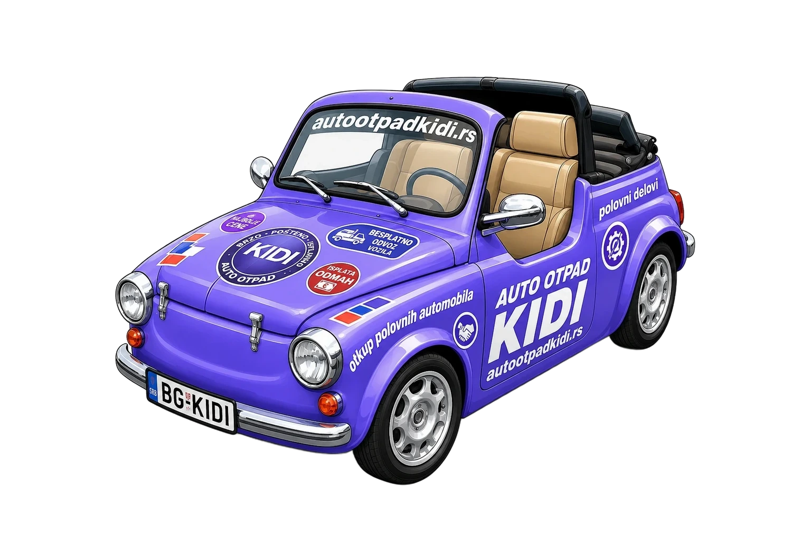
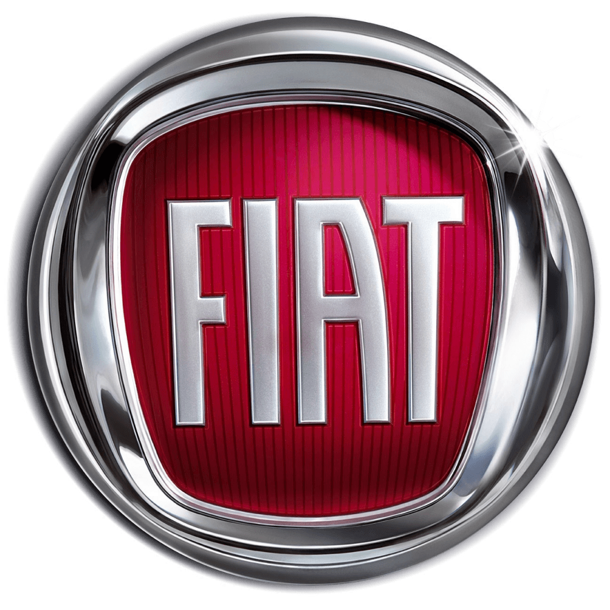
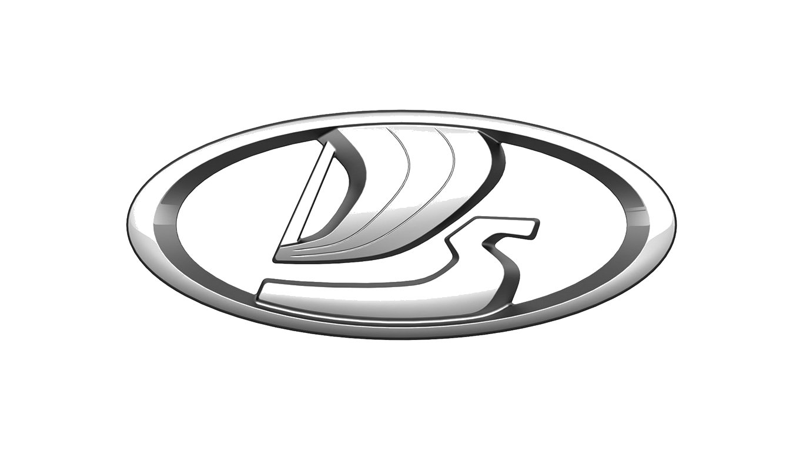
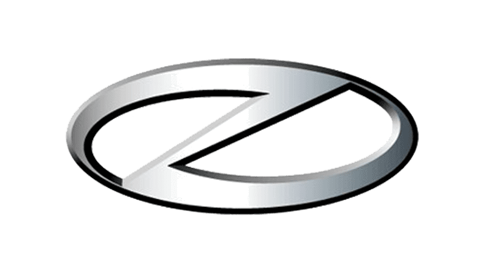

Lim u penziji • znanje na mreži

Auto otpad Kidi je od sada — samo stranica. Nismo propali, nismo se iselili i nismo prodali ključeve od dvorišta. Prosto smo shvatili da je lakše kliknuti nego gaziti kroz baru po kiši.
Ovde ukratko predstavljamo usluge kojima se i dalje bavimo. Naši novi i osveženi sajtovi čekaju vas malo niže — sveže ofarbani, bez rđe i bez „dođite sutra".
Drago nam je što ćemo i ubuduće biti na usluzi svima kojima trebaju pošteni polovni delovi. A to je, ruku na srce, svako ko vozi nešto starije od svog telefona.

FIAT 500 · 600 · 750/850 (naš voljeni Fića) · Uno · Punto · Panda · Bravo · Stilo · Tipo · Seicento Pogledaj delove →
LADA Niva, Riva, Samara, 2101–2107 — jednostavne kao pesma, izdržljive kao svekrva. Pogledaj delove →
ZASTAVA 101, 128, Yugo, Skala, Florida — domaći ponos od branika do auspuha. Pogledaj delove →Fiat, Lada i Zastava — tri marke vozila, hiljade delova zbog kojih palimo farove i po danu i po noći.